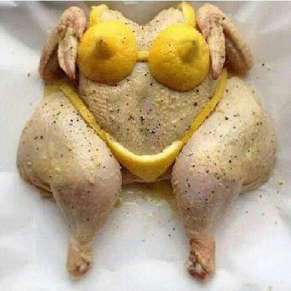

Doubtful Vegan
Doubtful Vegan
26/10/2020
Should I keep on eating chicken?
I know, I know, eating animal is wrong, for the health, the environment, and the animals themselves. However, I have been finding myself in a really difficult situation, because I cannot stop thinking about the sexy chicken that I saw in the market place the other day. It was... sexy... and not just like in those instragram accounts from horny teenages... no!! It was the most sexy thing that I have seen in a long, long, long time!